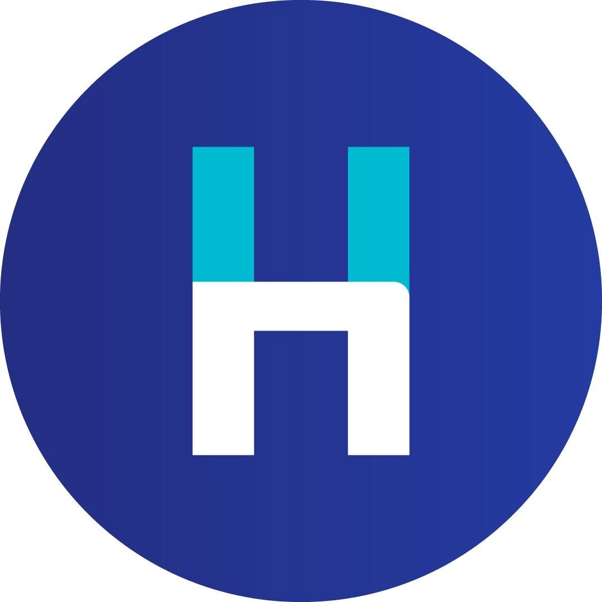

תפסיקו לרדוף אחרי תשלומים — תוכנת גבייה אוטומטית עם סוכן AI
סוכן ה-AI שלכם מתקשר ללקוחות שחייבים, פועל לפי הכללים שלכם, ומשפר את תזרים המזומנים. חסכו 10+ שעות בשבוע על גבייה — בלי לגייס עובד נוסף. עסקים שמשתמשים ב-Seenn רואים שיפור של עד 40% בגביית חובות לקוחות.
איך Seenn מגיעה ללקוחות שחייבים לכם כסף?
ג'ס, סוכנת ה-AI של Seenn, רודפת אחרי כל חשבונית פתוחה בערוצים שהלקוחות באמת עונים בהם: שיחת טלפון בקול טבעי, הודעת וואטסאפ ביזנס רשמית ואימייל. היא יכולה לשלוח קישור תשלום לסכום המדויק, עונה לתשובות, מטפלת במחלוקות, סוגרת את המעגל כשהכסף נכנס, וקובעת בעצמה מתי ואיך לפנות בפעם הבאה.
שיחת טלפון אמיתית — הערוץ שכמעט אף מתחרה לא נוגע בו
- היא מתקשרת בקול טבעי, בשם המותג שלכם ולפי הכללים שלכם — ומטפלת בתשובות במקום להשאיר הודעה בתא הקולי.
- תוך כדי השיחה היא יכולה לשלוח קישור תשלום לסכום המדויק, כך שאפשר לסגור את זה על המקום.
- היא סוגרת את המעגל בעצמה: שולחת שוב את החשבונית, מצליבה את התשלום ומסמנת שהחוב נסגר.
- כשהשיחה באמת דורשת אדם, היא מעבירה אותה אליכם — אבל היא בנויה לסגור הכול בעצמה.
- כשהשיחה נגמרת היא קובעת את הצעד הבא — מתי לחזור ובאיזה ערוץ.
היא מתקשרת, מטפלת בהתנגדות, סוגרת התחייבות לתשלום — ואז רושמת את התוצאה בחזרה מול החשבונית.
וואטסאפ: שם לקוחות שחייבים באמת עונים
- כל הודעה מציינת את מספר החשבונית ואת סכום החוב המדויק, והיא יכולה לשלוח קישור תשלום שסוגר את זה בלחיצה אחת.
- כשהלקוח כותב בחזרה היא עונה, ויכולה לשלוח שוב בעצמה את החשבונית או את הקבלה.
- היא סוגרת את המעגל בתוך השיחה: מצליבה את התשלום ומאשרת שהחשבונית נסגרה.
- WhatsApp Business API רשמי — ספק טכנולוגי מאושר של Meta, כך שההודעות יוצאות ממספר עסקי מאומת.
שלום כרמל לוגיסטיקה — כאן ג'ס ממגד אספקה טכנית.
חשבונית INV500000967 · 6,240 ₪ · לתשלום עד 12.7.2026
החוב עדיין פתוח אצלנו. אפשר לשלם כאן:
seenn.ai/pay/INV500000967על אילו חודשים זה?
מאי ויולי 2026. שלחתי לכם שוב את החשבונית כדי שתוכלו להצליב מול הספרים שלכם.
Invoice-INV500000967.pdfשולם הבוקר בהעברה בנקאית.
תודה — הצלבתי את ההעברה מול INV500000967 וסגרתי אותה. הקבלה מצורפת.
Receipt-INV500000967.pdfשיחה אחת מתחילתה ועד סופה: התזכורת, שאלת הלקוח, החשבונית, התשלום והקבלה — הכול טופל על ידי ג'ס.
אימייל: המעקב שלא שוכח
- מעקבים אישיים בשם המותג שלכם, בתזמון ובטון שאתם קובעים.
- היא יכולה לצרף את מה שהלקוח ביקש — חשבונית או קבלה — ולהוסיף קישור תשלום.
- היא קוראת את התשובה, עונה לה, וסוגרת את המעגל מול החשבונית.
- כל שליחה, תשובה ותוצאה מתועדות — והיא קובעת מתי יוצא המעקב הבא.
חשבונית INV500000972 — באיחור של 14 יום
באיחורשלום דנה — חשבונית INV500000972 על סך 2,150 ₪ הייתה אמורה להיפרע ב-12 ביולי ועדיין פתוחה אצלנו.
צירפתי את החשבונית. אם התשלום כבר בוצע, פשוט השיבו כאן ואצליב את זה מול הרישומים שלנו.
Invoice-INV500000972.pdf148 KBנשלח בשם המותג שלכם — וג'ס קוראת גם את התשובה שחוזרת.
ההמחשה מבוססת על חברות ומספרי חשבונית לדוגמה. Seenn לא מפרסמת שם, מספר או קישור תשלום של לקוח אמיתי — כל הודעה יוצאת מהמספר העסקי ומהמותג שלכם.
התחברו למערכת הפיננסית הקיימת שלכם תוך ימים, לא חודשים

…ועוד. אינטגרציות מותאמות ו-API זמינים.